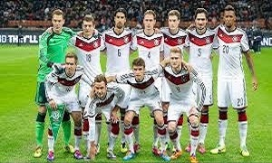

Home
Politics
Buisines
Science
Sports
Arts & Style
Weather
Top stories of the day:
Chancellor Angela Merkel’s conservatives beat their rivals on Sunday to win her a fourth term in an election that will also bring a far-right party into Germany’s parliament for the first time in more than half a century, exit polls showed.

The history of the German national football team began in 1908, when Germany played its first international match. Since then, the German national football team has been one of the most successful football teams, winning four World Cups and three European Championships.